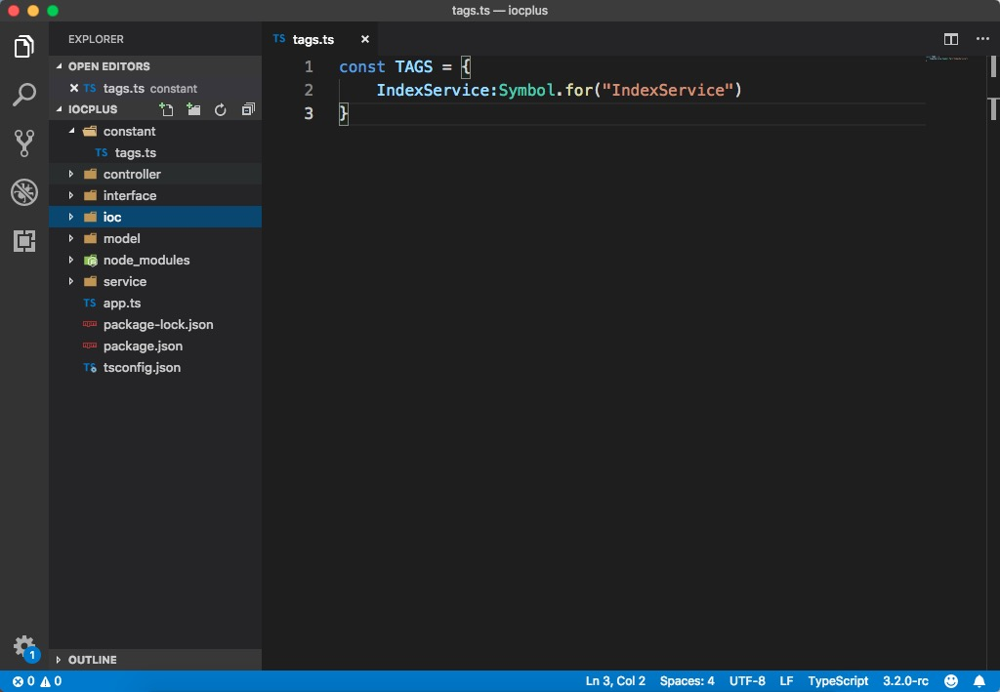
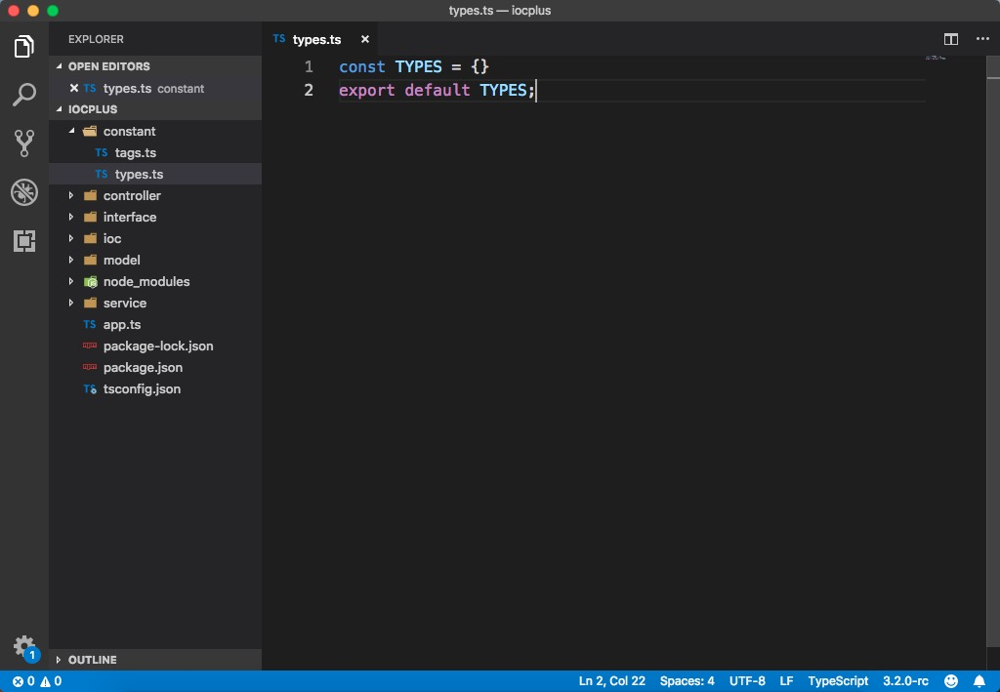
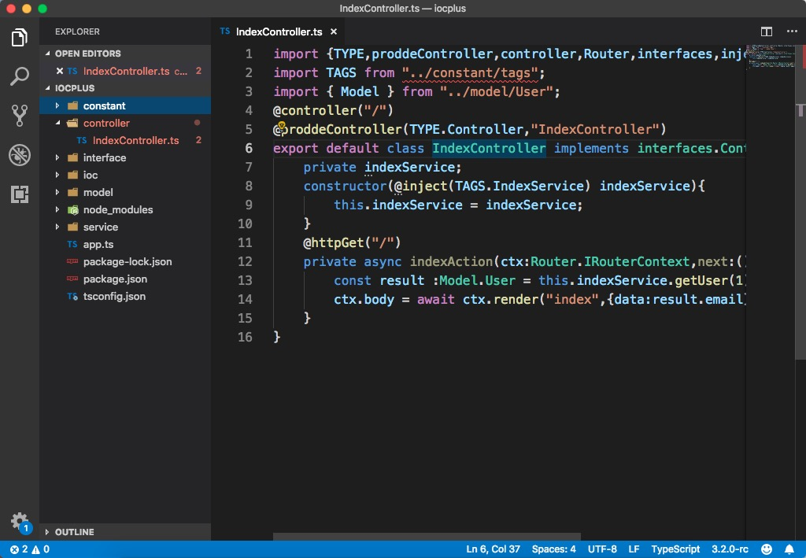
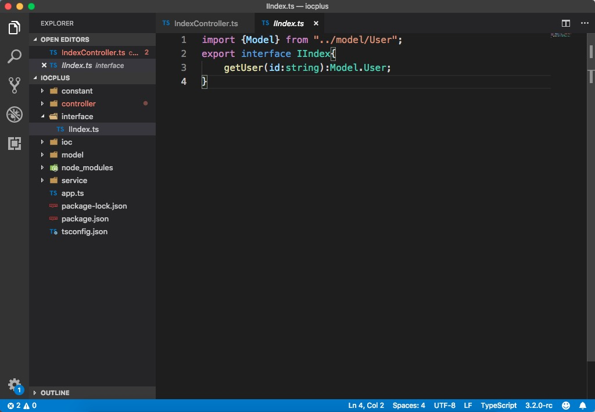
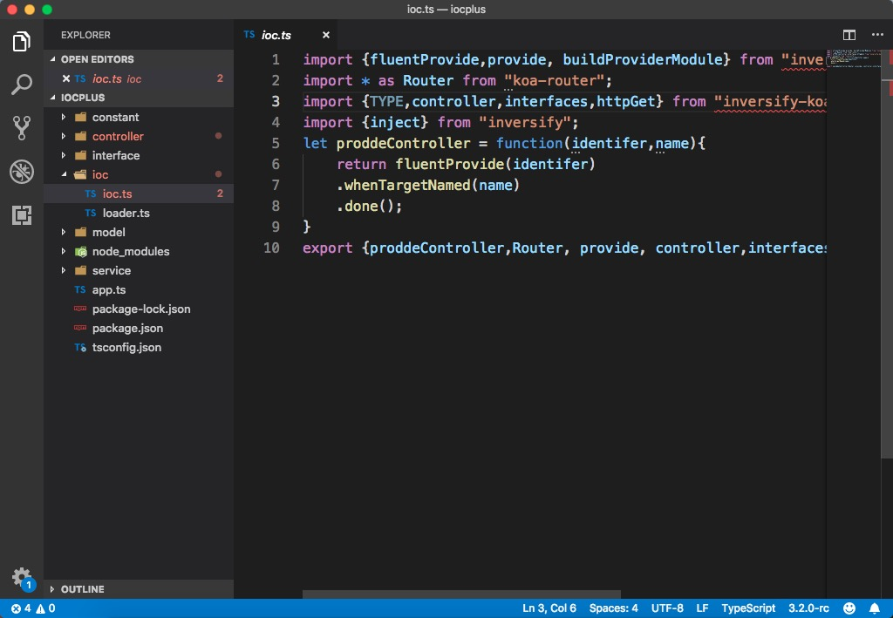
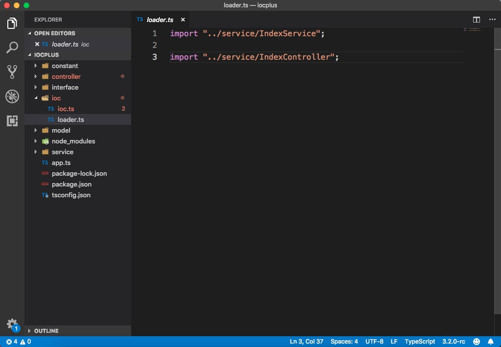
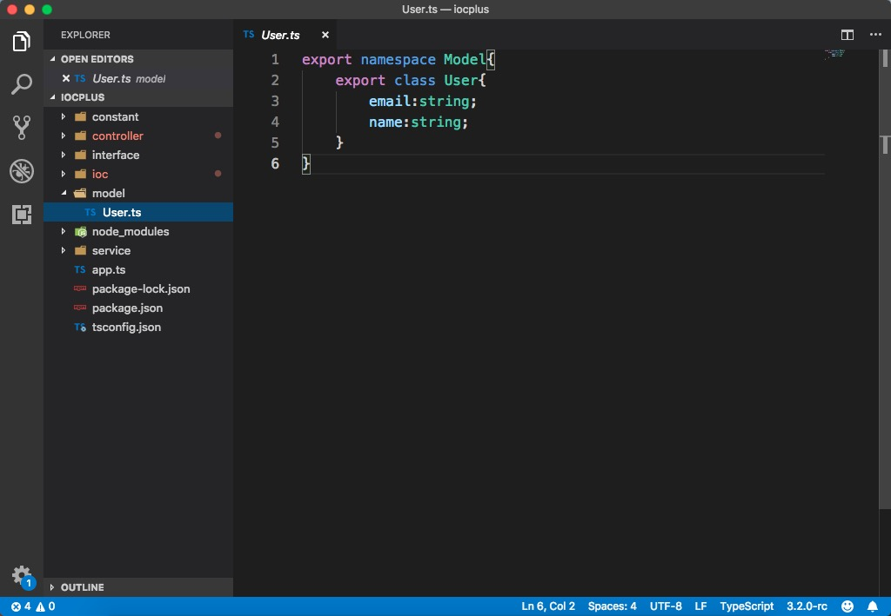
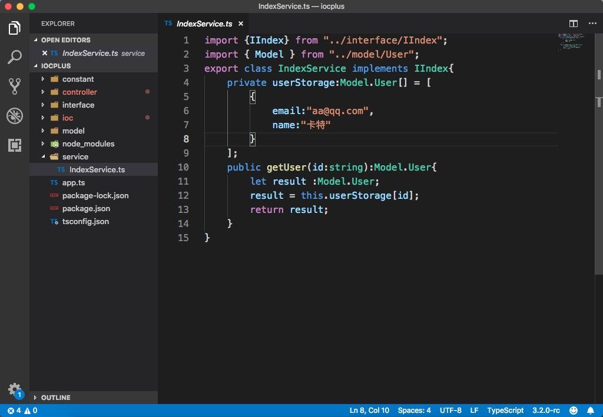

安装ts-node
npm install --save ts-node
package.json添加配置
"scripts": {
"test": "echo \"Error: no test specified\" && exit 1",
"server:start": "ts-node app.ts"
},
项目根目录下创建app.ts和tsconfig.json
//app.ts
import "reflect-metadata";
import * as bodyParser from 'koa-bodyparser';
import "./ioc/loader";
import { buildProviderModule} from "./ioc/ioc";
import { Container } from 'inversify';
import { interfaces, InversifyKoaServer, TYPE } from 'inversify-koa-utils';
let container = new Container();
//核心 告诉container 你用我的方式去找 @provide @injectable
container.load(buildProviderModule())
// create server
let server = new InversifyKoaServer(container);
server.setConfig((app) => {
// add body parser
app.use(bodyParser());
});
let app = server.build();
app.listen(3000);
//tsconfig.json
{
"compilerOptions": {
"target": "es5",
"lib": ["es6"],
"types": ["reflect-metadata"],
"module": "commonjs",
"moduleResolution": "node",
"experimentalDecorators": true,
"emitDecoratorMetadata": true
}
}
constant目录下创建tags.ts和types.ts文件
//tags.ts
const TAGS = {
IndexService:Symbol.for("IndexService")
}
export default TAGS;
//types.ts
const TYPES = {
}
export default TYPES;
 
controller目录下创建IndexController.ts
//IndexController.ts
import {TYPE,proddeController,controller,Router,interfaces,inject,httpGet} from "../ioc/ioc";
import TAGS from "../constant/tags";
import { Model } from "../model/User";
@controller("/")
@proddeController(TYPE.Controller,"IndexController")
export default class IndexController implements interfaces.Controller{
private indexService;
constructor(@inject(TAGS.IndexService) indexService){
this.indexService = indexService;
}
@httpGet("/")
private async indexAction(ctx:Router.IRouterContext,next:()=>Promise<any>):Promise<any>{
const result :Model.User = this.indexService.getUser(1);
ctx.body = await ctx.render("index",{data:result.email})
}
}

interface目录下创建IIndex.ts
//IIndex.ts
import {Model} from "../model/User";
export interface IIndex {
getUser(id : string):Model.User;
}

ioc目录下创建ioc.ts和loader.ts
//ioc.ts
import {fluentProvide,provide, buildProviderModule} from "inversify-binding-decorators";
import * as Router from "koa-router";
import {TYPE,controller,interfaces,httpGet} from "inversify-koa-utils";
import {inject} from "inversify";
let proddeController = function(identifer,name){
return fluentProvide(identifer)
.whenTargetNamed(name)
.done();
}
export {proddeController,Router, provide, controller,interfaces,inject,httpGet,buildProviderModule};
//loader.ts
import "../service/IndexService";
import "../service/IndexController";
 
在model目录下创建User.ts文件
//User.ts
export namespace Model {
export class User {
email : string;
name : string;
}
}

service目录下创建IndexService.ts
//IndexService.ts
import {IIndex} from "../interface/IIndex";
import {Model} from "../model/User";
import TAGS from "../constant/tags";
import {provide} from "../ioc/ioc";
@provide(TAGS.IndexService)
export class IndexService implements IIndex {
private userStorage : Model.User[] = [
{
email: "10000@qq.com",
name: "卡特琳娜"
}
];
public getUser(id : string) : Model.User {
let result: Model.User;
result = this.userStorage[id];
return result;
}
}
